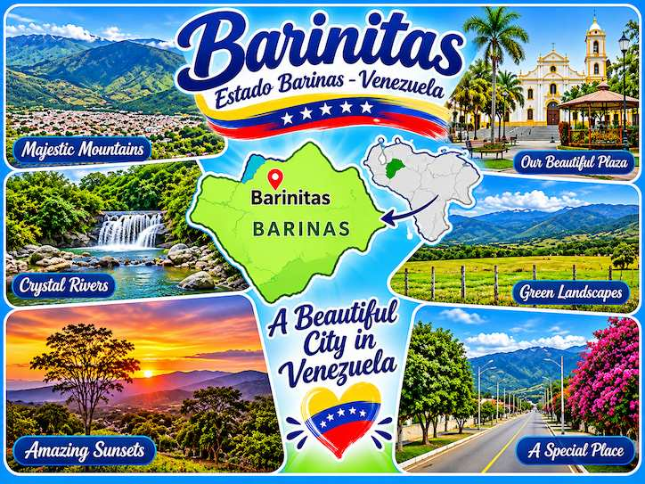

Barinitas, located in the beautiful state of Barinas, Venezuela, is more than just a city to me; it is a place full of life, beautiful memories, and special moments. What makes it so beautiful is its amazing natural scenery, surrounded by green mountains, trees, and fresh air. I love its peaceful atmosphere, its pleasant weather, and the feeling of being close to nature. Every time I think about Barinitas, I imagine its beautiful landscapes, the sound of the birds, and the warmth of its people.

But for me, the real beauty of Barinitas is not only in its landscapes; it is also in its people, traditions, and simple way of life. I love how friendly and welcoming people are, the delicious traditional food, and the feeling of being part of a community. It is one of those places where you can enjoy the little things, spend time with family and friends, and feel at home. Barinitas is beautiful not only because of what you can see, but also because of what you can feel.